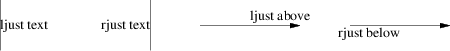

By default, text is centered at the geometric center of the object it is associated with. The modifier ljust causes the left end to be at the specified point (which means that the text lies to the right of the specified place!), the modifier rjust puts the right end at the place. The modifiers above and below center the text one half line space in the given direction.
Text attributes can be combined:

Figure 7-1: Text attributes
What actually happens is that n text strings are centered in a box that is textwid wide by textht high. Both these variables are initially zero (that is pic’s way of not making assumptions about [tg]roff(1)’s default point size).
In GNU gpic, objects can have an aligned attribute. This only works if the postprocessor is grops. Any text associated with an object having the aligned attribute is rotated about the center of the object so that it is aligned in the direction from the start point to the end point of the object. Note that this attribute has no effect for objects whose start and end points are coincident.